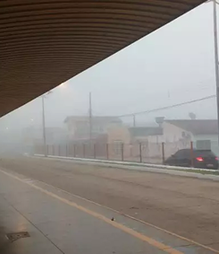
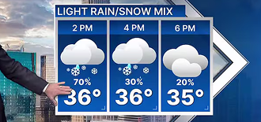
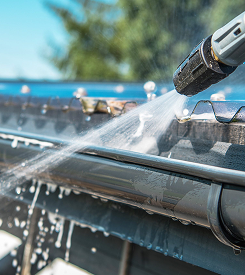
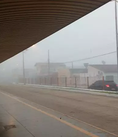
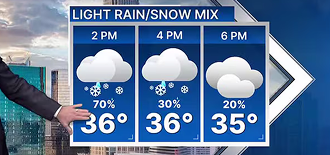
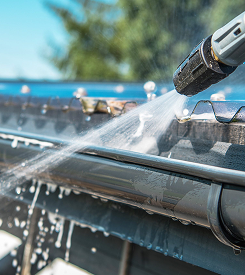

A água que salva também pode destruir.
Conscientizar é a primeira defesa.
Qual o problema?
🔔
Falta de resposta adequada a alertas
Alertas existem, mas a população não sabe o que fazer com eles.
Segundo a Defesa Civil, milhares de pessoas recebem alertas de risco por SMS, mas menos de 30% tomam medidas práticas após o aviso. O problema não é só avisar — é educar e orientar.
🌧️
Enchentes são cada vez mais frequentes e devastadoras
A cada ano, o Brasil registra novos recordes de chuvas e prejuízos com alagamentos.
Entre 2013 e 2023, mais de 8,2 milhões de brasileiros foram afetados por enchentes. Além dos danos materiais, essas tragédias causam mortes evitáveis e deslocamentos em massa.
🚨
Lentidão na comunicação com os socorristas
Profissionais como bombeiros e policiais enfrentam atrasos por falhas na comunicação com a população.
Em emergências, cada minuto conta. Muitos pedidos de socorro chegam tarde, de forma desorganizada ou sem localização precisa, dificultando o salvamento e agravando os impactos.
📵
Falta de acesso rápido a informação confiável
Em momentos de crise, fake news e desencontro de informações confundem ainda mais a população.
A ausência de um canal unificado, confiável e acessível para instruções e alertas leva muitas famílias a tomarem decisões erradas — ou simplesmente não fazerem nada.
Tipos de Alertas Utilizados

Alerta Amarelo
(atençâo)
Clima indica possível risco de chuva forte nos próximos dias.
Alerta Laranja
(perigo Moderado)
Chuva forte já acontecendo, com risco real de alagamento.
Alerta Vermelho
(perigo Imediato)
Chuvas intensas ou alagamentos já estão em curso com risco à vida.
 





O que fazer após um: Alerta Amarelo
- - Acompanhe canais oficiais (Defesa Civil, apps).
- - Evite sair de casa ou transitar por áreas alagáveis.
- - Combine rotas seguras com familiares e vizinhos.
- - Proteja documentos e itens essenciais.
- - Limpe calhas, bueiros e mantenha mochila de emergência preparada.
Os objetivos a serem alcançados
Nosso objetivo é transformar alertas em ações efetivas, oferecendo informações claras e acessíveis sobre como a população deve agir em cada nível de risco climático e enchentes urbanas.
Também buscamos aproximar a população das autoridades, promovendo uma cultura de prevenção, resposta rápida e conscientização, a fim de reduzir os impactos sociais, ambientais e humanos causados por alagamentos.
Veja MaisAs tecnologias a serem utilizadas
IOT (Internet das Coisas)
Sensores instalados em ruas monitoram em tempo real o nível da água, acionando automaticamente alertas e notificações para autoridades e moradores.
Sistema de Alertas Inteligente
Alertas visuais e sonoros são divididos em três níveis: amarelo (atenção), laranja (preparação) e vermelho (ação imediata), cada um com instruções claras.
Plataforma Web Responsiva
Um site acessível de qualquer dispositivo traz informações, orientações, canais de contato e mapa colaborativo de áreas afetadas, facilitando a navegação mesmo em emergências.o (ação imediata), cada um com instruções claras.
Integração com Serviços Públicos
A comunicação com defesa civil, bombeiros e demais órgãos é feita de forma automatizada e eficiente, agilizando o atendimento a emergências reais.
Benefícios e Aplicações no Dia a Dia
Nossa solução oferece alertas inteligentes que orientam a população sobre o que fazer em cada nível de risco, promovendo ações rápidas e eficazes. Além disso, facilita a comunicação com autoridades, como bombeiros e defesa civil, agilizando o socorro em momentos críticos. Por meio de um sistema automatizado, conecta sensores de monitoramento à rede de resposta emergencial, otimizando decisões e reduzindo danos.
No cotidiano, mesmo fora dos períodos de chuva, a plataforma segue atuando com informações educativas, dicas de prevenção e canais de contato, promovendo uma cultura de segurança. Assim, ajudamos a evitar tragédias, garantir a proteção de vidas e manter a população bem-informada e preparada para agir com segurança em qualquer situação.
Publico alvo
Autoridades civis, como bombeiros, defesa civil e policiais militares, que atuam na linha de frente em situações de risco.
Moradores de áreas de risco e regiões urbanas frequentemente afetadas por enchentes e alagamentos.
Comunidades vulneráveis, com acesso limitado à informação, tecnologia e infraestrutura de resposta a emergências.
Estudantes e escolas, especialmente jovens interessados em soluções de tecnologia social e prevenção de desastres.
Entre em contato
O formulário foi criado para estreitar a comunicação entre a população e os responsáveis pelas ações preventivas e emergenciais. Através dele, conseguimos identificar regiões de risco, avaliar o nível de conscientização da população e oferecer orientações personalizadas. Além disso, os dados coletados podem ser compartilhados com autoridades civis e projetos sociais, auxiliando em ações rápidas e assertivas em casos de enchentes.
Ao preencher o formulário, você estará contribuindo para um sistema mais inteligente, humano e eficaz no enfrentamento de desastres naturais.
Você Está Preparado?
Agora que você assistiu ao vídeo, é hora de testar seus conhecimentos! O quiz a seguir foi elaborado com base nas orientações apresentadas e tem como proposta concretizar o que foi aprendido, além de contribuir para sua preparação em casos reais de enchente. Responda com atenção e veja se você está pronto(a) para agir com segurança diante desse tipo de emergência.
Começar